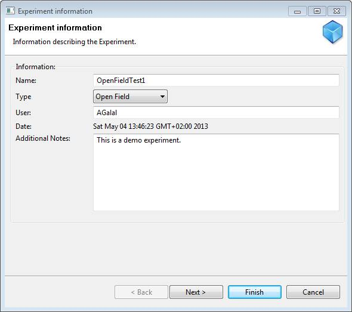
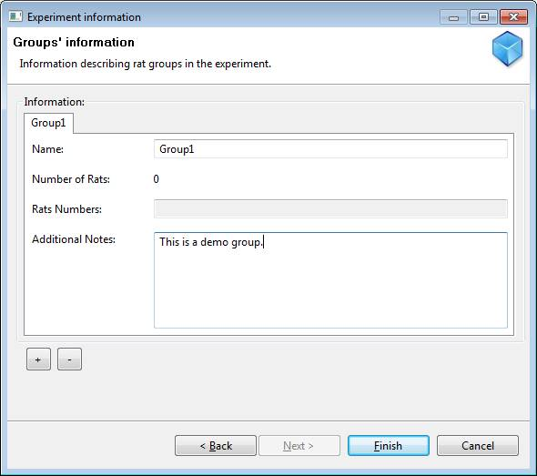

Open Field Test
Definition
From Wikipedia, the free encyclopedia
The Open Field Test (OFT) is an experiment used to assay general locomotor activity levels and anxiety in rodents in scientific research.
Developed by Calvin S. Hall to test emotionality of rodents. The open field test (OFT) is a commonly used qualitative and quantitative measure of general locomotor activity and willingness to explore in rodents. However, the extent to which behavior in the open field correlates with general locomotor activity in other situations (e.g., in a home cage or on an activity wheel) is controversial.
The open field is an arena with walls to prevent escape. Commonly, the field is marked with a grid, and square crossings, rearing, and time spent moving are used to assess the activity of the rodent. In the modern open field apparatus, infrared beams or video cameras with associated software can be used to automate the assessment process. The OFT is also often used to assess anxiety by including additional measures of defecation, time spent in the center of the field, and the first few minutes of activity. The relation between the OFT and other tests of exploratory activity (elevated plus maze and emergence) have been analyzed in two mouse strains. Changes in these measures are often used to assess the sedative or stimulant effects of pharmacological agents.
Newer attempts has been to analyze the OFT by quantifying the animal's moment-by-moment developmental dynamics. A recent study was able to show that mouse exploratory behavior consists of sequences of repeated motion: iterative processes that increase in extent and complexity, whose presumed function is a systematic active management of input acquired during the exploration of a novel environment.
Support in Behavioral Monitoring Tool
A. Creating Experiment
Steps to create a new Experiment:
- Select menu: Experiment->New Exp.
- Fill in the New Experiment Page as shown in the following snapshot:
- Create at least one Rat Group, as shown in the following snapshot:
- Click Finish
- Save Experiment to a file
B. Start streaming session
Please refer to section Staring Video Stream Session
C. Start tracking session
Please refer to section Staring Tracking Session
D. Export results to Excel sheet
Experiment parameters currently exported to excel:
- Rearing Count
- All Zones Entrance Count (AZE)
- Central Zones Entrance Count (CZE)
- Central Time (CT)
- Distance
- Session Time (ST)
Please refer to section Exporting Results to Excel Sheet